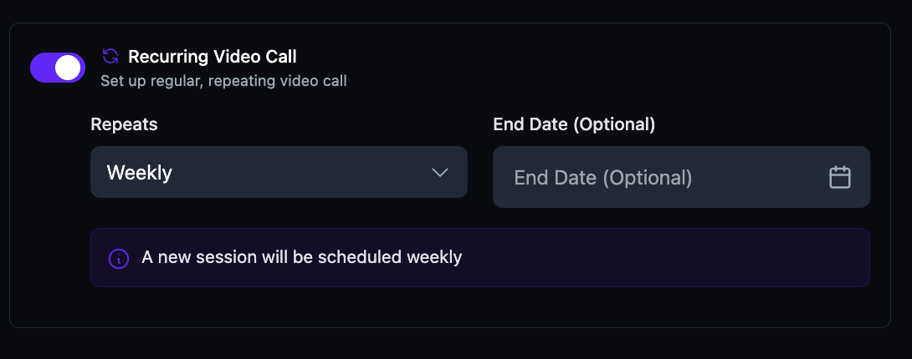
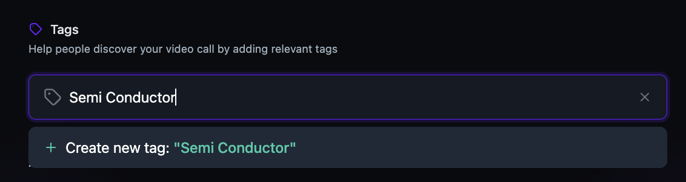
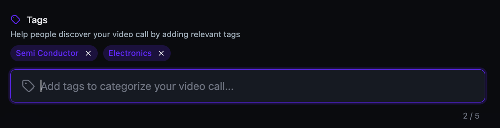
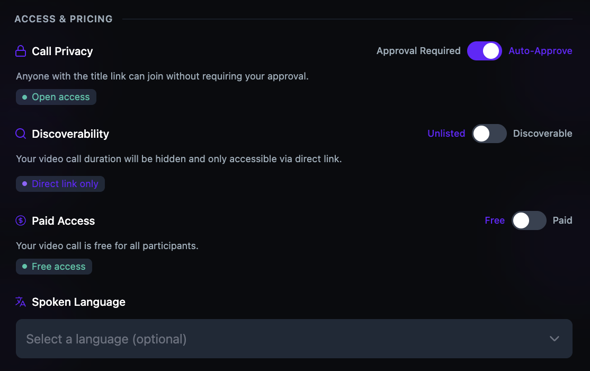
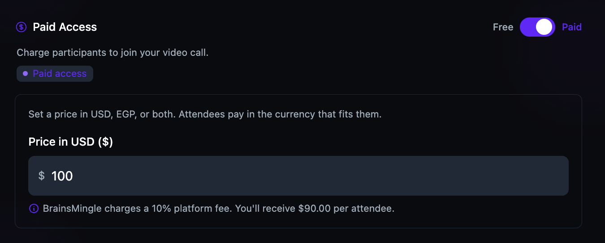
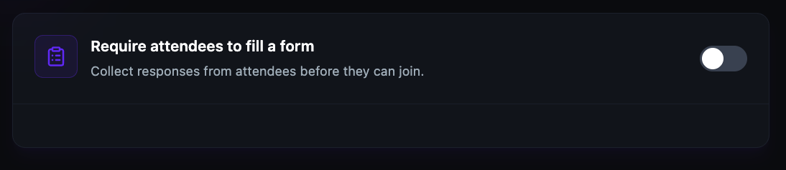

Schedule a live video session
Video rooms are scheduled video sessions for team meetings, office hours, workshops, webinars, and group discussions. Create a room, set the date and time, configure access and pricing, and share the link with your members.
Before you get started
- You must have an Admin or Moderator role to create sessions.
- If you want to charge for the session, ensure your payment account is connected. See Connect your payment account.
Set up event details
- Click + Create Room in the top navigation bar.
- Select Video Room.

- Under Event Details, enter a Title for your video call.
- Enter a Description that tells participants what the call is about and what they can expect.
- Set the Date & Time and select your Timezone from the dropdown. Participants see event times converted to their local timezone.
- Set the Video Call Duration using the slider or the +/– controls. The range is 10 to 600 minutes.

Configure options
-
Under Options, configure the following:
- Webinar Mode — toggle on to host large-scale events with 250+ attendees.
- Recurring Video Call — toggle on to set up a regular, repeating video call.

- If you toggle Recurring Video Call on, select a repeat frequency (e.g., Weekly) and optionally set an End Date.

Please note: Webinar Mode requires an upgraded plan. If Webinar Mode is not available, contact your account administrator.
Add tags and configure access
- Under Tags, type a tag name and click + Create new tag to add it. Tags help people discover your video call. You can add up to 5 tags.


-
Under Access & Pricing, configure the following:
- Call Privacy — toggle between Approval Required and Auto‑Approve. Auto‑Approve lets anyone with the link join without requiring your approval.
- Discoverability — toggle between Unlisted (direct link only) and Discoverable (visible in search and listings).
- Paid Access — toggle between Free and Paid. If paid, set a price in USD, EGP, or both. Attendees pay in the currency that fits them.


Please note: BrainsMingle charges a 10% platform fee on paid sessions. The net amount you receive per attendee is displayed below the price field.
Set up a registration form
- To require attendees to fill a form before joining, toggle Require attendees to fill a form on.

- Enter a Form title (e.g., "Registration for our session").
- Under Quick Add from Suggestions, click + next to any suggested fields to add them (Full Name, Email Address, Phone Number, Company / Organization, Job Title, LinkedIn Profile URL, What brings you here?, How did you hear about us?).
- To add a custom question, click + Add question and enter your question text.

Please note: You must add at least one question with text to enable publishing.
Publish and share
- Review your session details and click Create Call ✓ to publish.
- Copy the session link from the confirmation page to share via email, messaging, or your community.
Tip: You can edit session details after publishing by navigating to the session page and clicking Edit. Changes to date or time trigger a notification to all registered members.